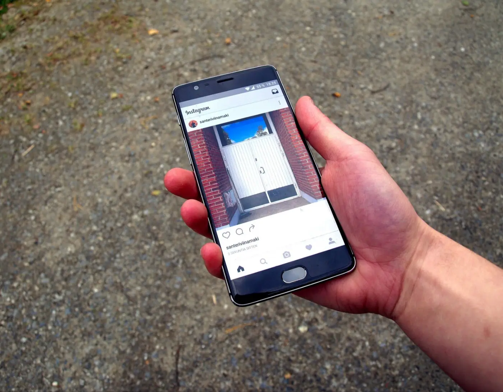
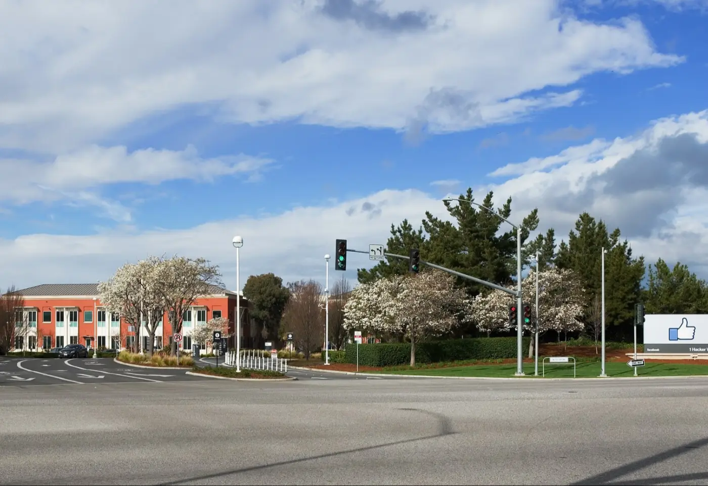
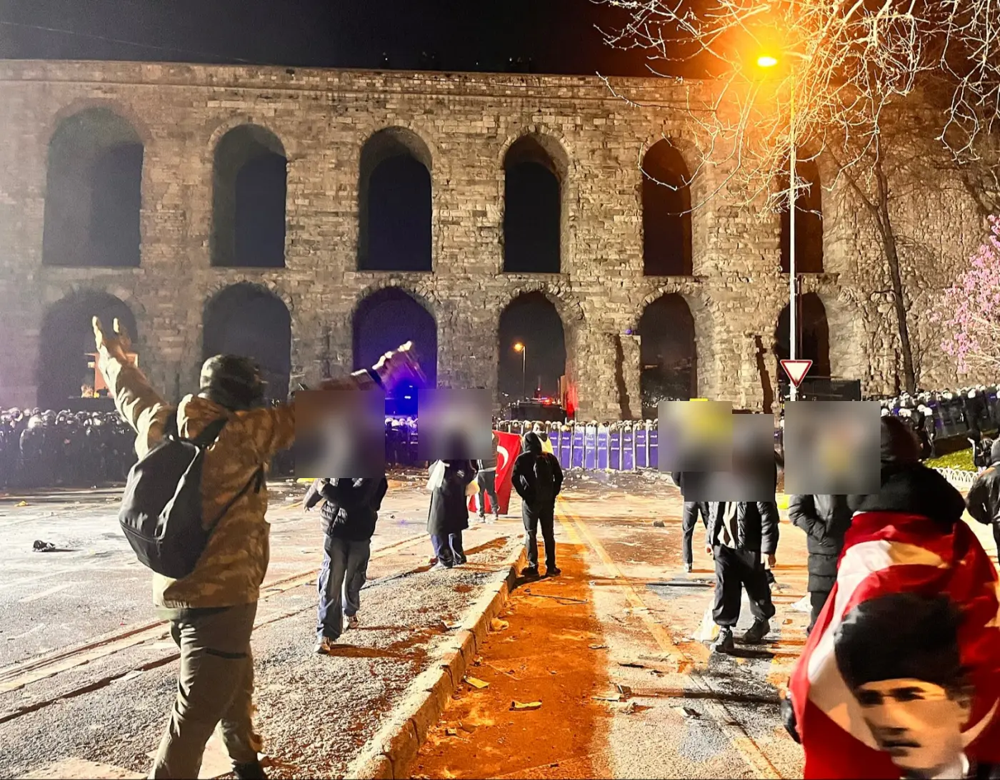

Who decides what you see online
This month India's IT ministry asked Meta to change what Facebook and Instagram recommend about protests, and posts covering them were blocked. Governments and the companies themselves have done this before.
Looking for another story? See all Focus stories →

What is happening


On 10 October India's IT ministry sent Meta an unpublished advisory. It asked Meta to make sure Facebook and Instagram do not "disproportionately amplify" misleading posts about protests or police action, to add context to videos of ongoing events, and to report back what it did. Hindustan Times · PTI via Daily Excelsior


Between 10 and 13 October, Meta blocked in India posts or accounts of Molitics India, Mathrubhumi English, Observer Post Hindi, Journo Mirror and journalist Shubhangi Das Gupta, citing government notices or "local IT Rules". Some got no notice. The digital rights group SFLC.in counted 181 restrictions between 1 and 18 October. Newslaundry · ThePrint

The Instagram account of Fridays For Future India was also blocked, with no reason given. The Internet Freedom Foundation calls the advisory "a censorship directive in all but name" and says the ministry has no legal power to issue it. On 15 October the Supreme Court held that access to the internet is a fundamental right. MediaNama · The South First · Indian Express


Companies also decide on their own. Human Rights Watch documented 1,050 cases of Palestine-related posts removed or suppressed on Instagram and Facebook after 7 October 2023; Meta said it was guided by human rights principles. In 2024 Meta stopped recommending political content on Instagram and Threads by default, then in January 2025 ended US fact-checking, saying "too much harmless content gets censored". Human Rights Watch · Instagram · Meta


In Turkey, after Istanbul's mayor was detained in March 2025, X blocked accounts on official orders, later including the mayor's own, while challenging the orders in court. Rights groups say Turkey has ordered X to block at least 1,270 accounts. In India in 2021, Twitter withheld about 250 accounts during the farmers' protests; the government said they were a "grave threat to public order". Reuters · AP · Al Jazeera

In Brazil, the electoral court has ordered Meta not to "unjustifiably restrict" political content before the 25 October runoff, after one campaign said its reach was cut; Meta says "any suggestion that Meta favors one side is false". Vietnam pressed Facebook in 2020 to censor more "anti-state" posts, and Nigeria blocked Twitter in 2021. Al Jazeera · Reuters · The Guardian
The IT ministry's advisory says such posts, without context or amplified by recommendations, "may contribute to public confusion, apprehension and disturbance of public order", and that any action must respect lawful expression. The ministry and Meta did not respond to requests for comment. Hindustan Times · ThePrint
In the daily edition: Tue 20 Oct